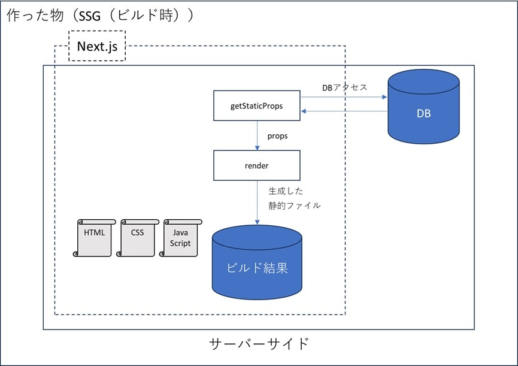
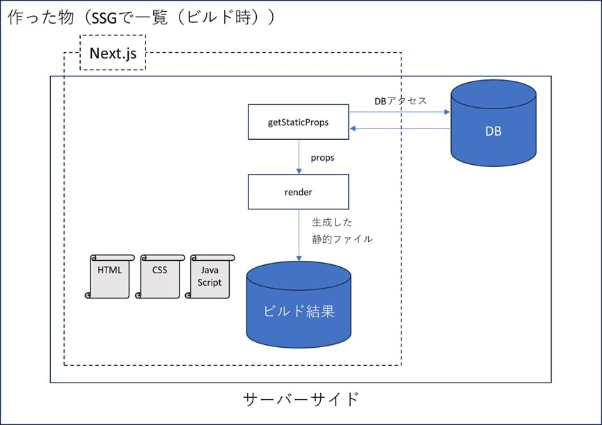
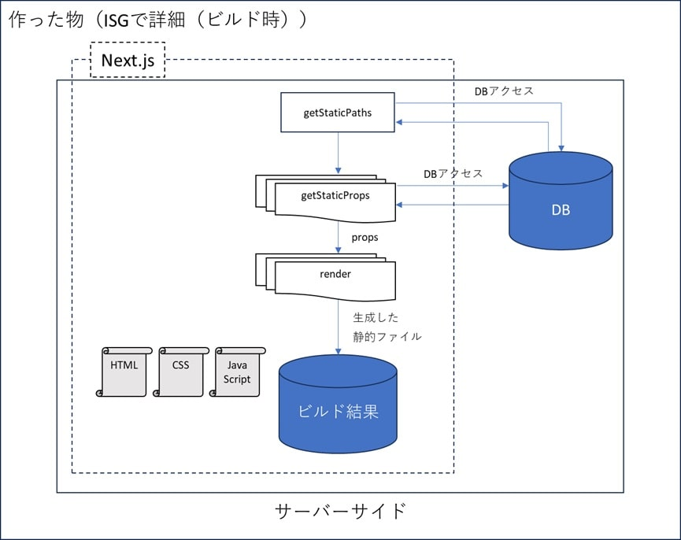

Next.jsのレンダリング
はじめに
このページは、 React/Next.js のレンダリングの続きのページです。Next.js のレンダリング手法にスポットを当てて記載していきます。一応このページから読み進めても問題ないように構成したつもりですが、リンク先のページを見てからの方が、ReactとNext.jsについて理解が深まるかもしれません。
今回は Next.js の v13.0.2 を使用していますが、v14以降（2025/3/23時点の最新は v15.2.3）、各レンダリング手法の実装方法が変わっていたり、新しいレンダリング手法が実装されたりするなど変化している模様。とは言え根本的な考え方は変わっていないはずなので主にそこを参考にしてほしいです。
Next.jsのレンダリング
Next.jsを使用することで様々なレンダリング手法が使えるようになり、アプリケーションの柔軟性が増します。
具体的には以下のレンダリング手法があります。それぞれデータ取得タイミングが異なっており、所定の関数を呼び出すことで実現できるようになっています。
Next.jsを使用して作成したアプリケーションをビルドすると以下のようなログが出力され、各ページがどのレンダリング手法でビルドされているのかを確認できるようになっています。
ビルドログ（抜粋）Route (pages) Size First Load JS
├ ○ /romasaga2r/charas/charas_index_csr 7.06 kB 128 kB
├ ● /romasaga2r/charas/charas_index_isr (ISR: 10 Seconds) 1.28 kB 130 kB
├ ● /romasaga2r/charas/charas_index_ssg (305 ms) 1.28 kB 130 kB
├ λ /romasaga2r/charas/charas_index_ssr 6.93 kB 128 kB
├ ● /romasaga2r/formation/[id] (1915 ms) 1.33 kB 106 kB
├ ├ /romasaga2r/formation/free_fight
├ ├ /romasaga2r/formation/imperial_cross
├ ├ /romasaga2r/formation/heavy_infatry_formation
├ └ [+29 more paths]
λ (Server) server-side renders at runtime (uses getInitialProps or getServerSideProps)
○ (Static) automatically rendered as static HTML (uses no initial props)
● (SSG) automatically generated as static HTML + JSON (uses getStaticProps)
(ISR) incremental static regeneration (uses revalidate in getStaticProps)
以下に各ビルド手法の詳細を記載していきます。
SSR(Server-Side Rendering)
レンダリングのタイミングと使用する関数
SSRは、ページへのアクセスが発生する度にサーバーサイド処理が実行され、クライアントに結果を返します。getServerSideProps 関数を使用して実現します。
ページへのアクセスが発生すると、レンダリングする前にサーバーサイドで getServerSideProps が実行され、関数が返した値を元にサーバー側でページをレンダリングするという手法です。
ブラウザでの初期レンダリング後は普通のReactアプリケーションと同様に、APIなどからデータを取得してレンダリングを動的に変化させることができます。
SSRの処理イメージ
SSRの特徴
アクセス毎にサーバーでデータを取得してレンダリングするため、常に最新のデータを元にしてページの初期レンダリングができ、SEO（※）への有用性が期待できます。
しかしサーバーで一定の処理があるため、サーバーに負荷が集中するなどの理由で、他の手法と比べると低レイテンシに陥る可能性があります。
※SEO：Search Engine Optimization. 自分のサイトを検索結果上位に表示させる為の取り組み。
メリット
- サーバー側で必要なページのみ生成し、ブラウザはそれを表示するだけなので、ページが表示されるまでの速度が早い
- ブラウザで JavaScript を実行する必要が無い為、使用しているマシンスペックに依存することが無い。それにより全てのユーザーに安定した表示速度を提供できる
- サーバーからはレンダリングが完了した HTML を渡される為、 CSR と比較して SEO で有利
- 常に最新のデータを元にページを生成することができる
デメリット
- ページ遷移の度にサーバーへの通信が発生する
SSRの実装サンプル
ssr_sample.tsxexport default function SsrSample(props: any) {
const {result} = props
// getServerSideProps の結果を元にページを構築する処理
return (
<>{result}</>
)
}
export async function getServerSideProps() {
// データの取得など、サーバーサイドで実行する処理を書く。
let result = dosomething()
return {
props: {
result,
}
}
}
SSG(Static Site Generation)
レンダリングのタイミングと使用する関数
SSGではビルド時に getStaticProps という関数が呼ばれ、その関数の中でAPI呼び出しやDBアクセスなどを行い、ページのレンダリングに必要な値を返します。
その後、値はページコンポーネントに渡され、レンダリングに使用します。レンダリング結果は静的ファイルの形でビルド結果に保存されます。
ページにアクセスがあった場合には、もともと生成していた静的ファイルをクライアントに送り、ブラウザはそれを元にレンダリングします。
ブラウザでの初期レンダリング後は普通のReactアプリケーションと同様に、APIなどからデータを取得してレンダリングを動的に変化させることができます。
SSGの処理イメージ
SSGの実装サンプル
ssg_sample.tsxexport default function CharasIndex(props: any) {
// getStaticProps の結果を元にページを構築する処理
let {result} = props
return (
<>{result}</>
)
}
export async function getStaticProps(): Promise<result> {
// API呼び出しやSQL発行などサーバーサイドで行う処理。
// ビルド時に実行される。
console.log('-----getStaticProps-----')
let result = dosomething()
return {
props: {
result,
}
}
}
getStaticProps はビルド時に実行されるため、上記のコードのようにconsole.log('-----getStaticProps-----')でコンソール出力を行っていた場合、ビルド時にそれが出力される（ビルド時に動いていることの確認）。
その後何度ページにアクセスしても同ログは出力されない。
ビルド時のログ（抜粋）> sagamax_react@0.1.0 build
> next build
-----getStaticProps-----
SSGの特徴
SSGは、アクセス時は静的ファイルをクライアントに渡すだけなので初期レンダリングが高速です。一方で、ビルド時のみデータ取得を行うため、初期レンダリングで古いデータが表示される可能性があります。リアルタイム性が求められるようなコンテンツにはあまり適しません。
パフォーマンスに優れるため、Next.jsにおいてはSSRよりSSGが推奨されます。
ISG(Incremental Static Generation)
レンダリングのタイミングと使用する関数
ISGは、1つのファイルでSSG形式のページを複数生成する手法です。
SSGは1ファイルで1ページなので、複数ページが必要な場合には適していません（使用するとファイル数が大変なことになる）が、ISGを使用することで、同じレイアウトで表示するデータが異なるページを1ファイルで複数用意することができます。
処理のイメージは以下の図のようになっています。
ISGの処理イメージ
ISGでは、パスパラメータを使用することで複数のページを1つのファイルで作成することができます。具体的には以下のように実装します。
- [パラメータ].tsxのような[ ]で囲んだ特別なファイル名
- 例：[id].tsx
- getStaticProps 関数と合わせて getStaticPaths 関数を利用する
- getStaticPaths 内でパスパラメータ（ファイル名が[id]ならパラメータはid）を指定し、getStaticProps 内でパラメータを使用可能
例えば以下のようなコードの場合、1/2/3 という名のページが作られ(getStaticPaths)、各ページのビルド時にidが返される(getStaticProps)。
[test].tsximport { GetStaticPaths, GetStaticProps, NextPage } from "next"
const Post: NextPage<any> = (props) => {
const {id} = props
return <span style={{'color': 'black'}}>{id}</span>
}
// getStaticPaths は生成したいページのパスパラメータの組み合わせを返す。
// このファイルは [test].tsxなので、パスパラメータとしてtestの値を返す必要がある。
export const getStaticPaths: GetStaticPaths = async() => {
const paths = [
{
params: {
test: '1',
},
},
{
params: {
test: '2',
},
},
{
params: {
test: '3',
},
},
]
return {paths, fallback: true}
}
// getStaticPaths 実行後にそれぞれのパスに対して getStaticProps が実行される。
export const getStaticProps: GetStaticProps = async(context) => {
const id = Array.isArray(context.params.test)
? context.params.test[0]
: context.params.test
console.log(id)
return {
props: {
id,
},
}
}
export default Post
getStaticPaths は getStaticProps 実行前に呼ばれる関数で、生成したいページのパスパラメータの組み合わせ(paths)とフォールバック(fallback)を返します。
パスパラメータに指定したそれぞれのパスに対して getStaticProps が実行されます。
- pathsはパラメータの組み合わせを表し、配列の要素1つが1つのページに対応します。
-
fallbackはgetStaticPathsが生成するページが存在しない場合の処理パターンを記載します（true/false/blockingを指定可能）。
- fallbackにfalseを指定すると、pathsで与えられなかったパスに対しては404ページを表示します。
-
trueを指定すると、pathsに指定しなかったパスも[test].tsxが処理します。上記サンプルコードの場合、4にアクセスしても対応するページが表示されます。
一旦データが空の状態のHTMLを返し、getStaticPropsを実行してサーバ側でデータを取得してから再レンダリングするような挙動をします。
（この時router.isFallbackがtrueになるのでこれを使用してローディング状態のハンドリングができます） - fallback: 'blocking'の場合はサーバ側でデータを取得してHTMLが生成されるまで待機するような挙動になります。
true/blocking を指定した場合であっても、同じページへの2回目以降のアクセスではサーバー側で構築されたHTMLが返却されます。
先のサンプルコードでは、 getStaticProps 関数内でログ出力（console.log(id)の部分）を行っています。fallbackにtrueを指定しているため、ビルド時のログと、サーバ起動後に実際に1, 2, 3, 4, 5の順にアクセスした場合のログの出力は以下のようになります
（1, 2, 3はビルド時に生成済みなのでページアクセス時はログ出力無し。4, 5はページへの初回アクセス時に getStaticProps が実行されるので初回のみログが出力される）。
ビルド時のログ> sagamax_react@0.1.0 build
> next build
1
2
3
サーバ起動後にアクセスした際のログ> sagamax_react@0.1.0 start
> next start
ready - started server on 0.0.0.0:3000, url: http://localhost:3000
4
5
ISGの特徴
SSG場合、ページが大量にあるとビルド時間がかかりすぎる問題があった。
ISGでは、fallbackの指定により事前に全てのページを生成しないようにすることで、この問題を解決している。
ISR(Incremental Static Regeneration)
レンダリングのタイミングと使用する関数
ISRはSSGの応用とも言えるレンダリング手法です。
ページの寿命を設定でき、寿命を過ぎたページについては最新の情報での再生成を試みて、静的ページを配信しつつ情報を更新できます。
ISR には revalidate を返す getStaticProps を用います。 revalidate の値が有効期間（秒）となり、有効期間を過ぎたページは再生成されます。
ISRの処理イメージ
ISRの特徴
一番初めにアクセスした場合はSSGの場合と同様で、サーバー側で実行した getStaticProps を元にクライアントで再レンダリングします。
それ以降のリクエストに対しては、 revalidate で指定した時間内の時はサーバーサイドでレンダリングして保存したページ（同じページ）を返します。
（ここ結構ややこしいので注意）
有効期限を過ぎた後にリクエストがあった場合（有効期限を過ぎた後ではない）は、そのリクエストに対しては現在保存しているページを返します。そして、 getStaticProps を実行しページをレンダリングして、新しいキャッシュとして保存します。
再生成されたページは次回以降のアクセス時に返されます。
ISRの実装サンプル
isr_sample.tsxexport default function IsrSample(props: any) {
// getStaticProps の結果を元にページを構築する処理
let {result} = props
return (
<>{result}</>
)
}
export async function getStaticProps(): Promise<result> {
console.log(`-----getStaticProps isg ${new Date()}-----`)
// API呼び出しやSQL発行などサーバーサイドで行う処理。
// ビルド時に実行される。
let result = dosomething()
return {
props: {
result
},
revalidate: 10, // In seconds
}
}
On Demand ISR(On Demand Incremental Static Regeneration)
オンデマンドISR は上述の ISR をさらに強化したような機能で、ISR だと revalidate で指定した時間を待たないとページが更新されなかったのに対して、任意のタイミングでページを更新できるようにしたものです。
unstable_revalidate 関数を実行することで、引数に指定したパス配下で getStaticProps を使用する個々のページのキャッシュを再生成してくれます。
今回私は試せていないので、参考になりそうなリンクを張っておきます。
- On-demand ISRの機能を試してみた
- ISR と オンデマンドISR を Next.js の挙動から完全に理解する
- Next.jsのOn-demand ISRで、ビルド不要の高速配信を実現する
- Next.jsのOn-demand Revalidationの簡単な説明
CSR(Client-Side Rendering)
上述のいずれにも属さない物をCSR(Client-Side Rendering)と呼んでいます。
ページをレンダリングするのに必要なデータは後から取得して反映するため、SEOにあまり有効ではありません。
CSRは、基本的にはSSG, SSR, ISRと組み合わせて利用するものと考えてください。
Reactのみを使ってSPAを作る場合にuseEffectの中でデータをfetchして結果をuseStateに渡して表示するというお馴染みのやり方です。
全てがクライアント側で完結するので、実装も運用もシンプルです。
作った物①：SSGとCSRの組み合わせ
SSGとCSRを組み合わせて作ったページ。
ロマサガ2リメイクというゲームに登場するキャラクターのステータスを一覧化したもの。
キャラクターのステータスは変化しないので、一覧自体はSSGで生成。一覧のソートや検索機能はCSRで一覧を操作することで実現している。
作った物①：SSGとCSRの組み合わせ
処理イメージ

SSGでビルド時にDBからデータを取得し、それを一覧に表示するページを生成。ソートや検索はCSRで実現している。今回作成したぺージは、データは変更されないのでSSGとCSRの組み合わせで構築した。
SSGはビルド時にページを生成してそれっきりなので、データが変更される場合は最新データが反映されないという問題がある。
その場合は revalidate を指定し（つまりSSGではなくISRにする）、一定時間が経過したら再ビルドさせることで最新データも反映されるようにする必要がある。
最新データを取ってくるだけならSSG+CSRでも可能だが、初期表示時に表示されるデータがビルド時のものになってしまうのでISRとするのが良いと思料。
SSR+CSRでも良いとは思うがSSGが最もパフォーマンスに優れるので、業務要件を考慮しながらどのような構成で行くのかは検討する必要がある。
作った物②：SSGで一覧画面、ISGで詳細画面
SSGで一覧画面、ISRで詳細画面（一覧画面からの遷移先）を構築したページ。
ロマサガ2リメイクというゲームに登場する陣形の一覧と詳細画面を作成した。
作った物②：SSGで一覧画面、ISGで詳細画面
処理イメージ
SSGで一覧画面を構築

ISGで各詳細画面を構築

Webアプリケーションを作っていると割とよくある一覧画面から詳細画面に遷移するパターン。
一覧画面は単一ページなのでSSGで作成。
詳細画面は複数あるが、表示するデータが異なるだけでレイアウトは同じなのでISGで生成した。
作った物①と同様にデータは変更されないので revalidate は指定していない。
ISGでも revalidate を指定することはできる（SSGと同じ getStaticProps 関数を使用している）ので、必要に応じて一定時間経過後に再生成させることは可能。
終わりに
これまでのWebアプリケーションはサーバーサイドレンダリングのみだったが、Next.jsでは様々なレンダリング手法がサポートされている。Next.jsは主にReactをサポートするフレームワーク。Reactの次に人気のVue.jsをサポートしているNuxt.jsでも様々なレンダリング手法がサポートされている。
モダンなWebアプリケーションを作成するためには様々なレンダリング手法を知り、業務要件を鑑みて、どのレンダリング手法でページを構築するのが良いかを考えながら実装する必要がある。
参考書籍

参考サイト
- note Next.jsのIncremental Static Regenerationが凄い
- Zenn Next.js + TypeScript | CSR・SSR・SG・ISG・ISR・On Demand ISR の違いをコード付きで解説
- もう迷わないNext.jsのCSR/SSR/SSG/ISR
- On-demand ISRの機能を試してみた
- ISR と オンデマンドISR を Next.js の挙動から完全に理解する
- Next.jsのOn-demand ISRで、ビルド不要の高速配信を実現する
- SSR, CSR, SSG, ISG, ISRの違いと使い分け方。それぞれNext.jsでTodoアプリ作ってみた。
- SSG と SSR で理解する Next.js のページレンダリング
- Next.js Web アプリケーションにおける SSG とSSR の比較： 正しいレンダリングアプローチの選択
- Next.jsのHTMLレンダリングを理解する
- Next.js Building Your Application
- 【Next.js14】CSR・SSR・SSG・ISRの違いと実装方法